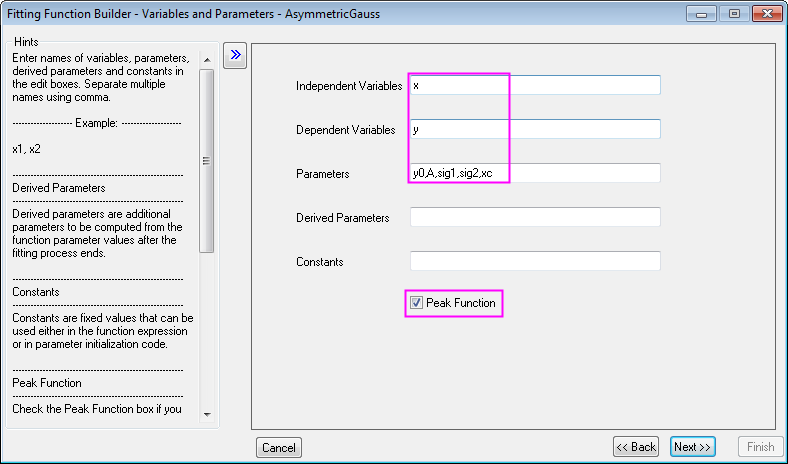
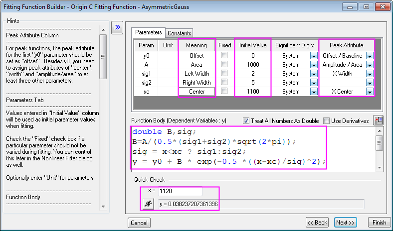
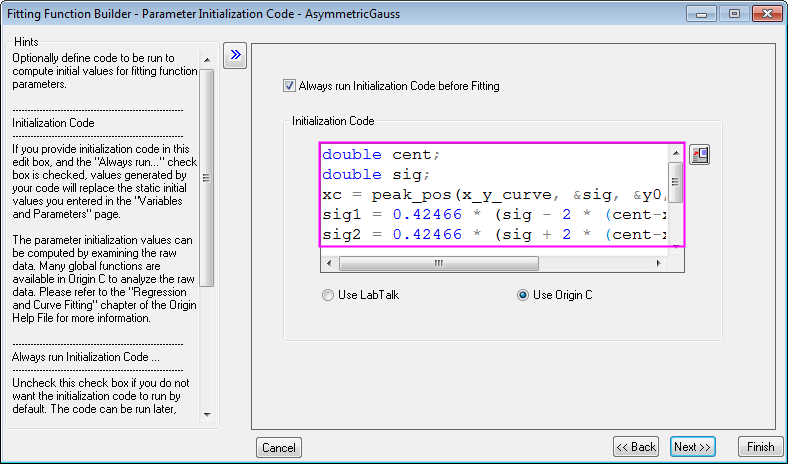
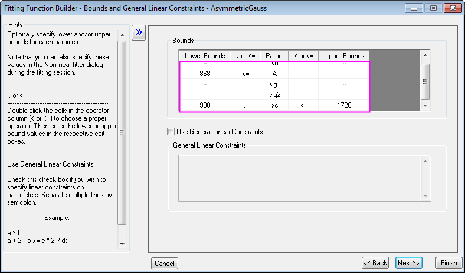
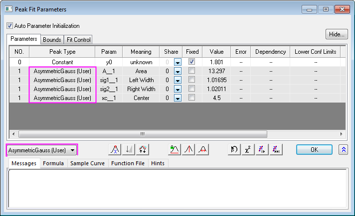
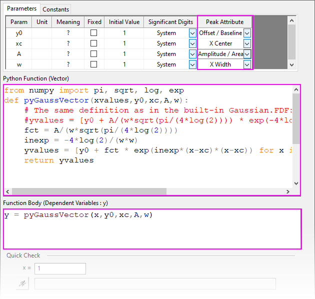
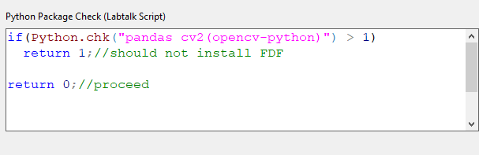
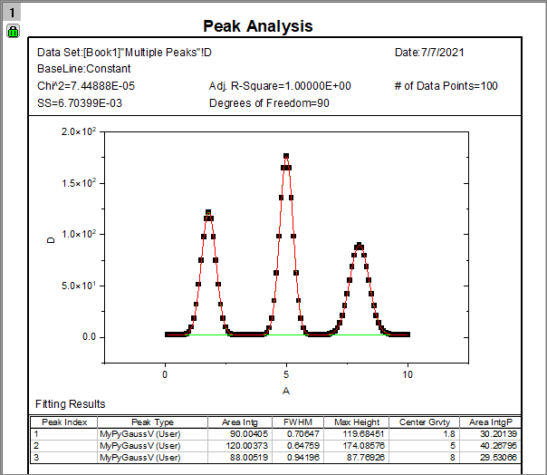

Peakfunktion definieren
PeakAnalyzer-DefinePeakFunc
Wenn Sie den Assistenten Peaks analysieren verwenden, um Peaks anzupassen (OriginPro), können Sie eine Standardfunktion für jeden Peak im Dialog Peak-Fit Parameter auswählen oder Sie können eine benutzerdefinierte Funktion mit den Dialogen Fitfunktionen verwalten bzw. Fitfunktionen erstellen erstellen. Das Definieren einer Peakfunktion ähnelt dem Erstellen einer benutzerdefinierten Anpassungsfunktion mit diesen zusätzlichen Vorbehalten:
- Um im Assistenten Peaks analysieren verwendet zu werden, sollte sich die Funktion in der Kategorie PFW befinden und das Kontrollkästchen Peakfunktion sollten beim Definieren der Funktion aktiviert sein.
- Um existierende Anpassungsfunktionen in anderen Kategorien für die Peakanpassung verfügbar zu machen, wählen Sie Hilfsmittel: Fitfunktionen verwalten. Klicken Sie mit der rechten Maustaste auf eine Funktion und wählen Sie Verschieben in oder Teilen mit und wählen Sie in der Auswahlliste die Option PFW aus.
- Damit die Peakfunktionen im Minitool Peakanalyse oder im Hilfsmittel Mehrere Peaks anpassen verfügbar ist, sollten Sie sie stattdessen in die Kategorie Peak Function einordnen.
- Falls Sie eine Funktion zur Anpassung Ihrer Basislinie (nur OriginPro) mit Peaks analysieren definieren möchten, müssen Sie die benutzerdefinierte Funktion in der Kategorie Basislinie ablegen.
- Die Funktion muss mindestens vier Parameter haben, die den verschiedenen Peakeigenschaften entsprechen. Die Parameterattribute werden mit den Spalte Peakattribute auf der Seite Funktionskörper des Dialogs Fitfunktionen erstellen festgelegt. Der erste Parameter sollte den Namen y0 tragen und dem Attribut Versatz/Basislinie zugewiesen sein. Den anderen Parameter können beliebige Namen zugeordnet sein. Ihnen sollten aber Attribute wie X-Zentrum, X-Breite und Amplitude/Bereich zugewiesen sein.
 |
Wenn ein Kollege eine FDF-Datei (Origin Function Definition File) mit Ihnen geteilt hat, können Sie sie durch einfaches Ziehen in Ihren Origin-Arbeitsbereich zu Ihrer Origin-Installation hinzufügen:
- Seit Origin 2018 werden die Informationen zur Kategorie in der FDF-Datei gespeichert. Wenn diese Datei in Origin gezogen wird, wird die Kategorie automatisch zur dem Autor zugewiesenen Kategorie zugeordnet.
- In älteren Versionen wird, wenn Sie die FDF-Datei in den Origin-Arbeitsbereich ziehen, der Dialog Kategorie zum Hinzufügen der Funktion auswählen geöffnet, so dass Sie eine Kategorie zuweisen können.
|
Beispiel 1: Origin C
Das folgende Beispiel zeigt, wie eine Peakfunktion mit dem Namen AsymmetricGauss definiert und im Assistenten Peaks analysieren verwendet wird.
Die zu definierende Peakfunktion wird, wie unten zu sehen, ausgedrückt:
- double B,sig;
- B=A/(0,5*(sig1+sig2)*sqrt(2*pi));
- sig = x<xc ? sig1:sig2;
- y = y0 + B * exp(-0,5 *((x-xc)/sig)^2);
wobei x die unabhängige Variable, y die abhängige Variable und y0, sig1, sig2, xc die Parameter sind, die den Attributen Versatz, Peakbereich, linke Peakbreite, rechte Peakbreite bzw. Peakzentrum entsprechen.
Es gibt sieben allgemeine Schritte beim Definieren einer Peakfunktion zum Anpassen im Assistenten Peaks analysieren:
1. Drücken Sie die F8-Taste oder gehen Sie zum Menü Hilfsmittel: Fitfunktion erstellen, um es zu öffnen.
2. Klicken Sie auf Weiter, um zur Seite Name und Typ zu gelangen, wählen Sie die Kategorie PFW aus der Auswahlliste Eine Kategorie auswählen oder erstellen aus und geben Sie AsymmetricGauss als Funktionsname ein. Wählen Sie Origin C im Feld Funktionstyp.
3. Klicken Sie auf Weiter, um zur Seite Variablen und Parameter zu gelangen, geben Sie Variablen und Parameter, wie unten gezeigt, ein und aktivieren Sie das Kontrollkästchen Impulsfunktion:
-
- 
4. Klicken Sie auf die Schaltfläche Weiter, um zur Seite Origin C-Ausdrucksfunktion zu gelangen. Klicken Sie auf jede Zelle in der Spalte Peakattribut, um die Peakattribute für jeden Parameter festzulegen. Geben Sie die Anfangsparameterwerte ein. Geben Sie die Bedeutung für jeden Parameter ein. Geben Sie die Funktionsgleichungen im Bearbeitungsfeld Funktionskörper ein und führen Sie eine Schnellprüfung bei x = 1120 durch, um sicherzustellen, dass der Ausdruck richtig geschrieben ist, wie auch unten zu sehen:
-
- 
5. Klicken Sie auf die Schaltfläche Weiter, um zur Seite Parameterinitialisierungscode zu gelangen, und geben Sie die folgenden Codes in das Bearbeitungsfeld Initialisierungscode ein.
-
- 
6. Klicken Sie auf die Schaltfläche Weiter, um zur Seite Grenzen und allgemeine lineare Nebenbedingungen zu wechseln. Klicken Sie doppelt in Zellen in der Spalte < oder <=, um die Operatoren umzuschalten, und geben Sie dann die oberen und unteren Grenzen ein. Das Festlegen der Grenzen für jeden Parameter beschränkt die angepassten Ergebnisse auf einen sinnvollen Bereich, wie unten zu sehen:
-
- 
7. Klicken Sie auf die Schaltfläche Fertigstellen und die Peakfunktion wird erstellt und in der Kategorie PFW abgelegt.
Danach können Sie die Impulsanpassung mit dieser Funktion in Peaks analysieren durchführen, indem Sie die Funktion in der Auswahlliste Peaktyp des Dialogs Peak-Fit Parameter auswählen.
- 
Beispiel 2: Python
Seit Origin 2021b können Sie Funktionen zur Peakanpassung mit Hilfe von Python definieren. Diese Funktionen können dann im Assisstenten Peaks analysieren, im Hilfsmittel Mehrere Peaks anpassen und im Dialog NLFit verwendet werden.
- Öffnen Sie Fitfunktionen erstellen (Hilfsmittel: Fitfunktionen erstellen oder F8), wählen Sie die Option Eine neue Funktion erstellen und klicken Sie dann auf Weiter.
- Setzen Sie Eine Kategorie auswählen oder erstellen = PFW und geben Sie unter Funktionsname MyPyGaussV ein. Setzen Sie Funktionsmodell = Explizit und Funktionstyp = Python-Funktion (Vektor).
- Geben Sie für Unabhängige Variablen = x und für Abhängige Variablen = y ein. Im Feld Parameter fügen Sie y0, xc, A, w hinzu (allesamt durch Komma getrennt).
- Aktivieren Sie das Kontrollkästchen Peakfunktion und klicken Sie auf Weiter.
- Geben Sie die folgenden Informationen ein und stellen Sie dabei sicher, dass die Auswahlliste Peakattribute für jede Zeile festgelegt ist (jeden Param):
-
- 
- Python-Funktion (Vektor)
from numpy import pi, sqrt, log, exp def pyGaussVector(xvalues,y0,xc,A,w): # The same definition as in the built-in Gaussian.FDF: #yvalues = [y0 + A/(w*sqrt(pi/(4*log(2)))) * exp(-4*log(2)*(x-xc)*(x-xc)/(w*w)) for x in xvalues] fct = A/(w*sqrt(pi/(4*log(2)))) inexp = -4*log(2)/(w*w) yvalues = [y0 + fct * exp(inexp*(x-xc)*(x-xc)) for x in xvalues] return yvalues
- Funktionskörper
y = pyGaussVector(x,y0,xc,A,w)
- Die nächste Seite -- die Seite Skript vor Installation -- ist eine Seite nur für Python, auf der Sie LabTalk-Code festlegen, der zum Überprüfen des Anwendersystems auf Python-Pakete, die für die Funktion erforderlich sind, verwendet wird. Beachten Sie, dass die Seite nicht leer bleiben kann.
- Klicken Sie auf Weiter, um zur Seite Skript vor Installation zu gelangen, und fügen Sie Folgendes hinzu:
- 
- Python-Paket-Prüfung (Labtalk-Skript)
if(Python.chk("pandas cv2(opencv-python)") > 1) return 1;//should not install FDF return 0;//proceed
- Da wir damit alle Einstellungen vorgenommen haben, klicken wir auf Fertigstellen, um Ihre Funktion zu speichern und den Dialog zu schließen.
- Wählen Sie Daten: Mit Datei verbinden: Text/CSV, navigieren Sie zu <Origin>\Samples\Curve Fitting, wählen Sie MultiplePeaks.dat, übernehmen Sie die Standardimportoptionen und klicken Sie auf OK, um die Datei zu importieren.
- Klicken Sie auf den Header von Spalte D(Y), um die Spalte zu markieren, und klicken Sie dann auf die Schaltfläche Punktdiagramm
 , um ein Punktdiagramm zu erstellen.
, um ein Punktdiagramm zu erstellen.
- Klicken Sie auf Analyse: Peaks und Basislinie: Peaks analysieren: Dialog öffnen
- Klicken Sie auf der Seite Ziel auf Peaks anpassen (Pro), dann viermal auf Weiter, um zur Seite Peaks anpassen (Pro) zu gelangen:
- Klicken Sie auf die Schaltfläche Fit-Steuerung unten auf der Seite. Ändern Sie in der Mitte des Dialogs Peak-Fit Parameter die Option Gaussian in MyPyGaussV (User) und klicken Sie auf OK, um diesen Dialog zu schließen.
- Klicken Sie auf die Schaltfläche Fertig, um mehrere Peaks mit Hilfe Ihrer benutzerdefinierten Python-Funktion anzupassen.
-
- 